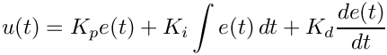
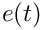
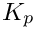
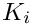
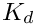
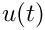

- Generated by
 1.17.0
1.17.0
|
PID Control 1.0
Discrete time implementation of P, PI, PD, PID. Including derivative filter, integral clamping, feed-forward, gain scheduling in standard and parallel form.
|
This library provides a collection of reusable C++ components for implementing Proportional-Integral-Derivative (PID) based control systems.
The library is designed to provide modular implementations of individual control actions as well as commonly used combinations such as P, PI, PD, and PID controllers.
The library provides implementations for:
The library is organized into separate modules according to the type of controller:
The implementation of the templates is located in the corresponding .tpp files under the src directory.
The proportional controller generates a control action proportional to the current error.
The integral controller accumulates the error over time and is commonly used to eliminate steady-state error.
The derivative controller generates a control action based on the rate of change of the error.
Combines proportional and integral actions to provide improved tracking while eliminating steady-state error.
Combines proportional and derivative actions to improve transient response and damping.
Combines proportional, integral, and derivative actions:

where:





The library provides low-pass filtered derivative and PID implementations to reduce the influence of high-frequency measurement noise on the derivative action.
The library also provides a PID implementation with feed-forward support. Feed-forward control can be used when a known component of the required control action can be estimated from the desired trajectory or system dynamics.
This documentation is generated using Doxygen.
The public API is provided through the header files under the include directory, while template implementations are contained in the corresponding .tpp files under the src directory.